Medidas de posición
Las medidas de posición dividen a un conjunto de datos ordenados en partes con la misma cantidad de individuos. Entre los más populares están los cuartiles, los deciles y los percentiles. La mediana es parte de ellos y se ubica al centro de los datos.
La Mediana
Una prueba de Matemática practicada a siete estudiantes dió como resultado las siguientes calificaciones:
68 - 72 - 73 - 81 - 85 - 87 - 91
En esta lista ordenada el dato central es 81, ya que hay la misma cantidad de datos menores que 81 y mayores que 81. El dato central de una lista ordenada, cuando existe, se denomina mediana. Así, la mediana de las siete calificaciones es 81.
Analicemos la siguiente situación:
Las cantidades de carreras anotadas por los líderes históricos en la liga de beisbol profesional de Nicaragua son las siguientes: 117, 115, 101, 97, 96, 95 y 93. Al ordenar los datos en orden creciente advertimos que la mediana, el dato central, deja el mismo número de datos por debajo y por arriba de ella.
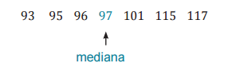Así, la mediana determina dos subconjuntos: el de datos menores que la mediana y el de datos mayores que la mediana. La mediana de la mitad inferior, 95, se denomina primer cuartil y se denota por Q1 .
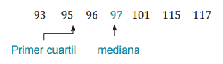La mediana de la mitad superior es el llamado tercer cuartil Q3. El segundo cuartil Q2, es la mediana de todos los datos.
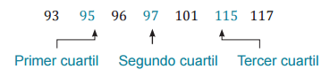Los cuartiles junto con los valores extremos, el máximo M y el mínimo m, pueden usarse para exponer en forma resumida la información que nos brindan los datos. En nuestro ejemplo, el resumen de los 5 números es:
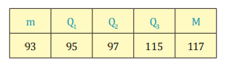Los Deciles y los Percentiles.
Los deciles son valores que dividen a una conjunto ordenado de datos en diez partes con igual cantidad de términos. Hay distintos métodos para calcular los deciles y, en general, las medidas de posición. Los valores que resultan al aplicar dos métodos distintos pueden diferir, aunque la diferencia se torna despreciable a medida que aumenta la cantidad de datos.
Lugar que ocupa la mediana
Un primer paso para determinar una medida de posición, es encontrar
el lugar que ocupa en relación al conjunto de datos.
Examinemos el caso de la mediana. Si el número de datos es igual a
3, como en la serie 5, 7, 8, la mediana ocupa la posición número.
Si la cantidad de datos es 5, como en 4, 6, 8, 10, 15, la mediana ocupa la posición número.
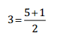Cuando hay 7 datos, como en la serie 2, 5, 8, 9, 12, 17, 20, la mediana se localiza en posición número.
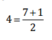Si observamos los casos particulares considerados, la posición de la mediana se calcula dividiendo entre dos el número de datos aumentado en uno. Es decir, cuando una serie tiene n datos, la posición de la mediana es:
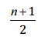Localizando deciles
En forma similar se determinan las posiciones de los deciles, solamente que en este caso hay que dividir entre 10. Si hay n datos, la posición del primer decil es:
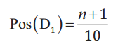Para hallar la posición del segundo decil, multiplicamos la del primer decil por dos:
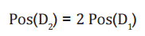De manera similar, la posición del tercer decil es la del primero multiplicada por 3:
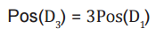En general, en un conjunto de n datos ordenados, la posición del k - ésimo decil es:
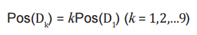Ejemplo:
Las facturas de 30 abonados del servicio de energía eléctrica de un
barrio capitalino registraron cifras contenidas en la segunda columna
de la tabla 7. Hallar los deciles primero, quinto y octavo.
Lo primero que se debe hacer es ordenar los datos en orden
creciente, pero este paso lo podemos saltar ya que los datos están
dispuestos de esa manera. La cantidad de datos es n = 30, así que
la posición del primer decil es:
Este resultado se interpreta de esta manera: debe tomarse el dato que ocupa la posición número 3, más una décima, 0,1, de la distancia que hay al siguiente dato. En la serie dada, el dato de la posición número 3 es 281; la distancia entre éste y el siguiente dato es:
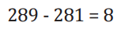Luego, el primer decil es:
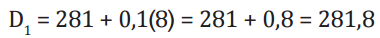La posición del quinto decil es la del primer decil multiplicada por 5, es decir,
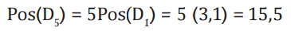
Por tanto, el quinto decil es el dato que está en la posición número 15,
es decir 336, más cinco décimas, 0.5, de la diferencia 338-336.
Así,
Observemos que este valor coincide con la mediana. Esta coincidencia no es casual, para una serie ordenada cualquiera de n datos, la posición del quinto decil es:
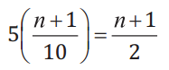que, como sabemos, es la posición de la mediana. La posición del octavo decil es la posición del primer decil multiplicada por ocho, es decir,
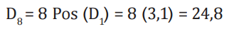El octavo decil es el dato de la posición 24 más 8 décimas de la distancia de éste al dato de la posición 25, es decir:
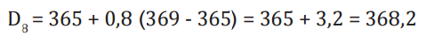Los percentiles
Los percentiles son valores que dividen a una colección ordenada de datos, en cien partes con igual cantidad de términos. Las posiciones de los percentiles se calculan en forma análoga a las de los deciles, pero en lugar de dividir entre diez se divide por 100. Así, para una serie de n observaciones el primer percentil ocupa la posición
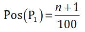Luego, la posición del k-ésimo percentil será:
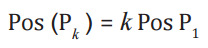A una prueba clasificatoria para optar a una especialidad en medicina, se presentaron 200 candidatos. El criterio para clasificar establece que se admitirán aquellos postulantes cuyos puntajes superen los 74 puntos y que además se ubiquen por encima del percentil ochenta. Las primeras 152 calificaciones fueron menores de 75 puntos y las restantes 48 calificaciones fueron las siguientes:
75, 75, 76, 77, 78, 79, 79, 79, 80, 80, 81, 81, 81, 81, 83, 83,
83, 83, 84, 85, 86, 86, 86, 87, 87, 87, 87, 88, 88, 88, 88, 89,
89, 89, 90, 91, 92, 93, 94, 94, 94, 95, 95, 95, 95, 96, 96, 96.
Puesto que la serie completa de las calificaciones consta de 200 términos, la posición del primer percentil es:
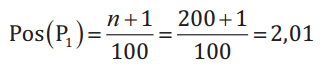Luego, la posición del percentil ochenta será:
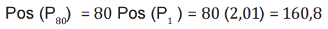Por tanto, el percentil ochenta es el dato que ocupa la posición número 160 más ocho décimas de la distancia que hay al siguiente dato. Como hay 152 calificaciones que no superaron los 74 puntos, la primera calificación de la lista dada es la número 153, luego la calificación número 160 se encuentra a siete posiciones más adelante, es decir la calificación de 79 puntos que precede a la nota de 80 puntos. Por tanto, el percentil ochenta es:
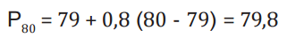Puesto que los que clasifican para ser admitidos en la especialidad ofertada deben superar este valor, los postulantes que tienen puntajes mayores o iguales a 80 son los que serán admitidos. Por tanto, clasifican los que sacaron las 40 calificaciones más altas.